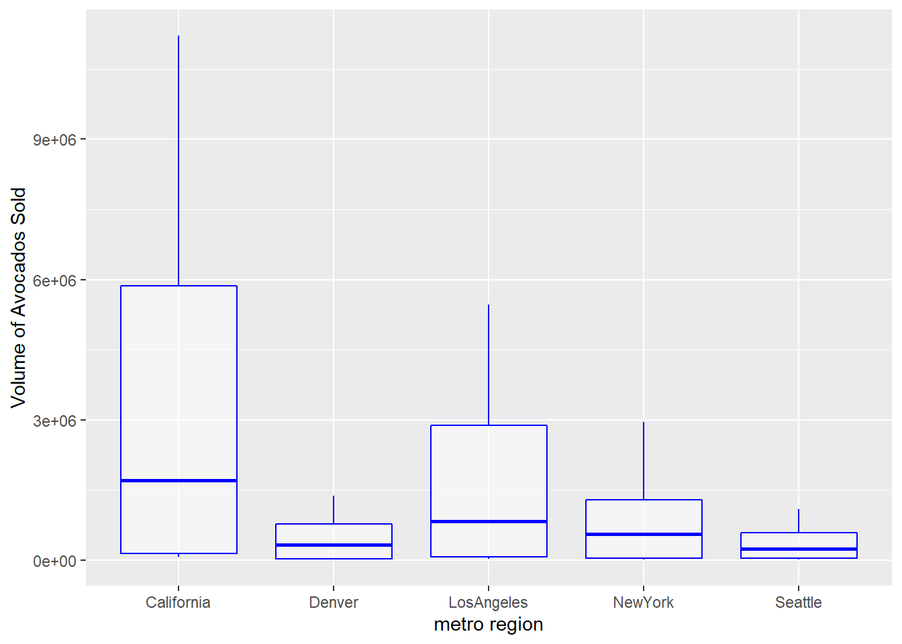
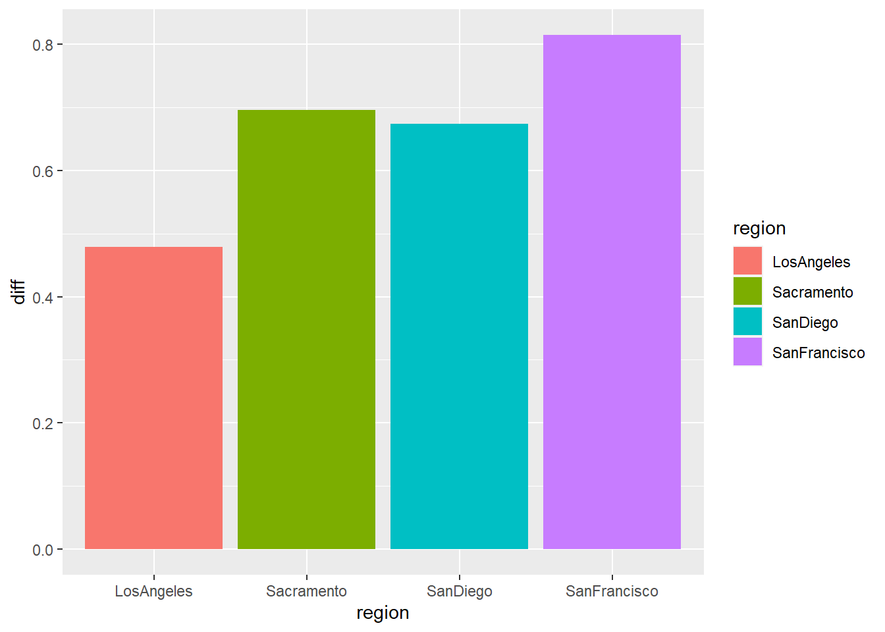
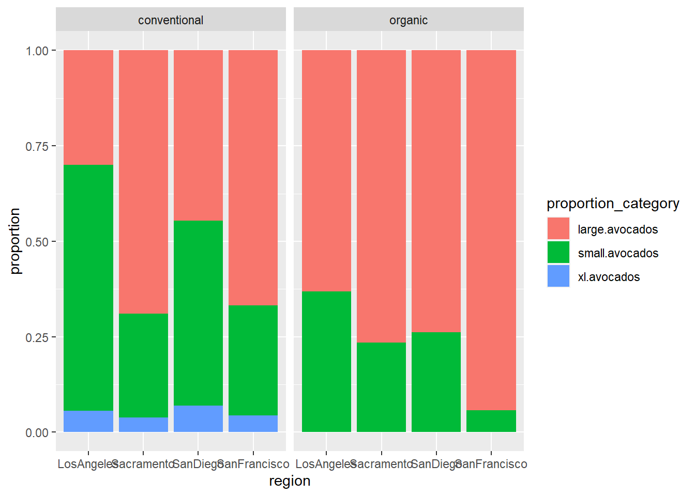

library(tidyverse)
library(here)Lab 4
avocadoes <- read_csv(here::here("supporting_artifacts", "avocado.csv"))- This data set includes the avocado prices and average number of avocados sold in different regions and different years. They are grouped into small, large, and extra large hass avocados. This data came from the Hass Avocado Board website in 2018. In this data set, the average prices of a single avocado and the total volume of each avocado size sold are also included. The regions, years, dates, and types of avocados are also present in the data set.
regions <- avocadoes |>
filter(region %in% c("GreatLakes", "Northeast", "Plains", "SouthCentral", "Southeast", "West"))
regions_updated <- avocadoes |>
semi_join(regions, avocadoes, by = "region")unwanted <- avocadoes |>
filter(region %in% c("California", "TotalUS"))
metro <- avocadoes |>
anti_join(regions_updated) |>
anti_join(unwanted) |>
rename("small.avocados" = `4046`,
"large.avocados" = `4225`,
"xl.avocados" = `4770`)- The West sold the most organic, small Hass avocados in 2017.
regions_updated |>
filter(year == 2017, type == "organic") |>
select(region, "4046")|>
group_by(region) |>
summarize(mean = mean(`4046`)) |>
slice_max(mean)# A tibble: 1 × 2
region mean
<chr> <dbl>
1 West 35287.- Februrary had the highest volume of avocado sales.
avocadoes |>
separate(col = Date, into = c("month", "day", "year"), sep = "/") |>
select(month, `Total Volume`) |>
group_by(month) |>
summarize(`Total Volume` = sum(`Total Volume`)) |>
slice_max(order_by = `Total Volume`)# A tibble: 1 × 2
month `Total Volume`
<chr> <dbl>
1 2 1760528797.- The five metropolitan regions that sold the most avocados were Midsouth, Los Angeles, New York, Dallas Fort Worth, and Houston.
metro |>
select(region, `Total Volume`) |>
group_by(region) |>
summarize(`Total Volume` = sum(`Total Volume`)) |>
slice_max(order_by = `Total Volume`, n = 5)# A tibble: 5 × 2
region `Total Volume`
<chr> <dbl>
1 Midsouth 508349357.
2 LosAngeles 507896548.
3 NewYork 240734128.
4 DallasFtWorth 208419287.
5 Houston 203167868.ca_regions <- avocadoes |>
filter(region == c("California", "LosAngeles", "NewYork", "Denver",
"Seattle"))
metro_ca <- avocadoes |>
semi_join(ca_regions, avocadoes, by = "region")
metro_ca |>
ggplot(mapping = aes(x = region,
y = `Total Volume`,
col = region)) +
geom_boxplot(col = 'blue', alpha = 0.5) +
labs(x = "metro region", y = "Volume of Avocados Sold")
- San Francisco had the biggest difference between organic vs. conventional avocado sales.
ca_cities <- metro |>
filter(region %in% c("LosAngeles", "SanDiego", "Sacramento", "SanFrancisco"))
summary <- metro |>
semi_join(ca_cities, avocadoes, by = "region") |>
select(region, type, AveragePrice) |>
group_by(region, type) |>
summarize(AveragePrice = mean(AveragePrice)) |>
pivot_wider(names_from = type,
values_from = AveragePrice) |>
mutate(diff = abs(conventional - organic))
summary# A tibble: 4 × 4
# Groups: region [4]
region conventional organic diff
<chr> <dbl> <dbl> <dbl>
1 LosAngeles 0.976 1.46 0.479
2 Sacramento 1.27 1.97 0.695
3 SanDiego 1.06 1.73 0.673
4 SanFrancisco 1.40 2.21 0.814summary |>
ggplot(mapping = aes(x = region,
y = diff,
fill = region)) +
geom_bar(stat = 'identity')
california_avocados <- metro |>
filter(region %in% c("LosAngeles", "SanDiego", "Sacramento", "SanFrancisco"))
california_avocados_props <- california_avocados |>
select(`Total Volume`, small.avocados, large.avocados, xl.avocados, type, region) |>
pivot_longer(cols = small.avocados:xl.avocados,
names_to = "proportion_category",
values_to = "proportions") |>
group_by(region, proportion_category, type) |>
mutate(proportion = proportions / `Total Volume`) |>
distinct(region, .keep_all = TRUE)
california_avocados_props |>
ggplot(mapping = aes(x = region,
y = proportion,
fill = proportion_category)) +
geom_col(position = "fill") +
facet_wrap(~type)